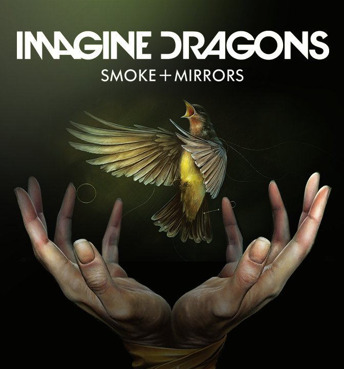

I love most old school music like dancing with tears in my eyes,take on me,my way,
everybody wants to rule the world,would it be nice,and ect.I also like mordern music like imagine dragons,
Shelter,Panic! At The Disco, The Chainsmokers,Twenty one pilots,and ect.

My favorite mordern music: